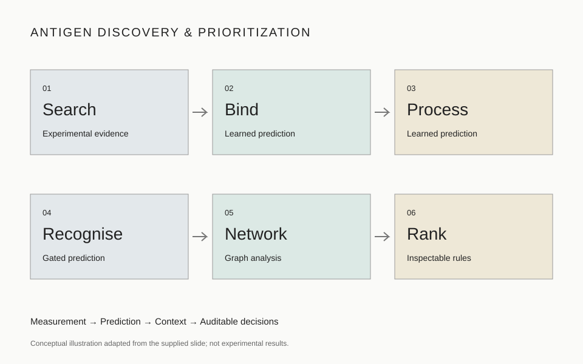

PROJECT 05 / IMMUNOLOGY
Antigen Discovery
& Prioritization.
From peptide evidence to testable candidates.
Combine mass-spectrometry evidence with peptide–MHC binding and processing predictions, contextual network analysis and transparent decision rules to prioritize candidates for experimental study.
Research framework · Evidence integration and method development

How the work progresses6 stages · measurements, predictions and inspectable rules
Six complementary stages separate experimental measurements, model predictions, graph analysis and final decision rules.
- 01 / Experimental evidence
Search
Organize mass-spectrometry peptide identifications, search settings and sample metadata. Distinguish detected peptides from predictions.
- 02 / Learned prediction
Bind
Evaluate peptide–MHC binding using suitable allele- and length-specific models. Retain each model’s output and version.
- 03 / Learned prediction
Process
Review proteasomal cleavage and transport predictions as separate processing endpoints.
- 04 / Gated prediction
Recognise
Treat predicted recognition as supporting evidence. Require independent evaluation before allowing it to affect prioritization.
- 05 / Graph analysis
Network
Organize relationships among candidates and biological context. Record graph construction and algorithm choices explicitly.
- 06 / Inspectable rules
Rank
Order candidates using a documented sequence of checks. Retain the decision path and evidence for every candidate.
What the supplied slide specifies
The source describes three neural networks for binding, learned cleavage and transport, a gated recognition model, graph-based network analysis and a fixed-order ranking rule. The nine individual ranking checks, model names, dataset definitions and graph schema are not supplied. These details remain to be specified.
Project outputs
Planned outputs: a candidate evidence table, model-specific prediction fields, graph provenance, per-candidate rule traces and an experimentally testable shortlist. No project dataset or validated shortlist is published here.
Tools & ResourcesExpandable implementation resources and provenance notes
Mass-spectrometry search workflow
Record the search engine, sequence database, false-discovery controls and peptide-level evidence. The source slide does not name a search package.
IEDB T Cell Class I tools — potential implementation resource
The official suite brings together MHC class I binding, processing and immunogenicity tools. Select methods appropriate to the intended alleles and study endpoint; this is a resource option, not identification of the models shown in the slide.
Official IEDB documentation ↗Graph analysis and rule audit
Document node and edge definitions, graph algorithm, ranking-check order, missing-data behavior and exclusion reasons. Freeze the rule version before evaluating a held-out dataset.
Virtual Screening Library
Use the shared browser to inspect available candidate records and provenance. This project does not yet have an antigen-specific dataset loaded there.
Open shared library ↗Evaluation MetricsEndpoint-specific checks and source-reported context
Experimental identification quality
Report peptide and spectrum counts, identification confidence and false-discovery estimates. Compare relevant sample groups before making specificity claims.
Binding and processing performance
Evaluate each endpoint separately, with the metric definition, sample size, split design, allele coverage and decoy construction.
Recognition-model generalization
Use held-out, study-relevant evaluation and calibration. A recognition score should not independently determine candidate rank.
Ranking reproducibility
Record the rule version, candidate pass/fail trace, ties, missing values and sensitivity to alternate check orders.
Experimental follow-up
Measure presentation, binding and functional recognition as distinct endpoints. The website describes a research framework; validation results are not available.
Numbers visible in the supplied slide — external context
| Endpoint | Slide-reported value | Interpretation limit |
|---|---|---|
| Binding | 0.99 against length-matched decoys | Metric and evaluation dataset not identified. |
| Proteasomal cut / transport | 0.68 / 0.70 | Metric definitions and validation design not provided. |
| Recognition | Published AUC 0.65; source-team AUC 0.48–0.53 | Different evaluations; not a laboratory benchmark. |
| Final ranking | Nine fixed-order, unweighted checks | The individual checks are absent from this slide. |
All numbers above are transcribed from the user-supplied conference-slide photo. They have not been independently reproduced and are not results from our laboratory.
Source & scope.
Project concept adapted from the user-supplied slide photograph headed “Where the AI is,” bearing Singapore General Hospital / SingHealth branding. The photograph does not establish collaboration or institutional endorsement. Speaker, presentation title and underlying study citation were not supplied.
Implementation notes and proposed evaluation checks are laboratory website additions. The official IEDB T Cell Class I documentation provides related software context. Model predictions support candidate selection; experimental evidence is needed to establish presentation and functional recognition.
Explore Immunology →